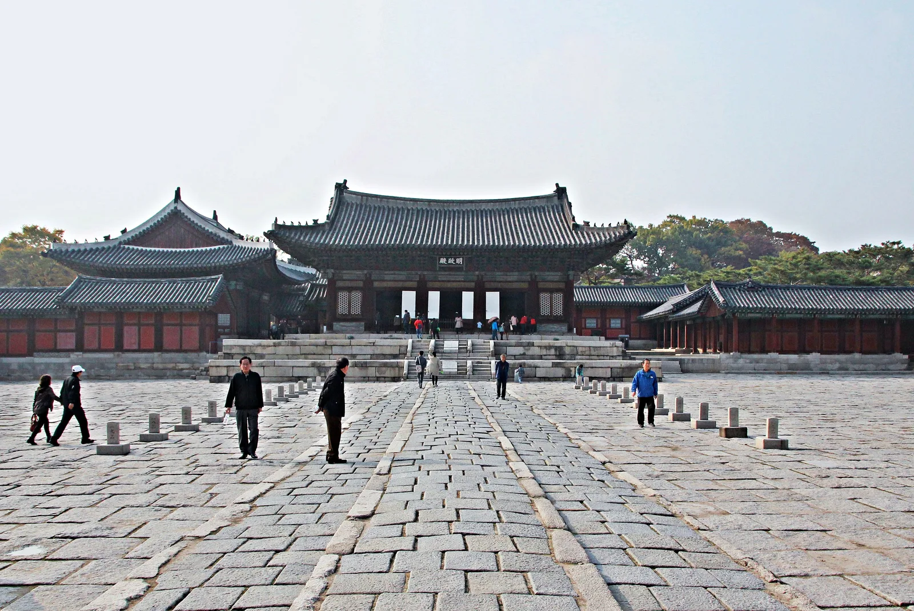
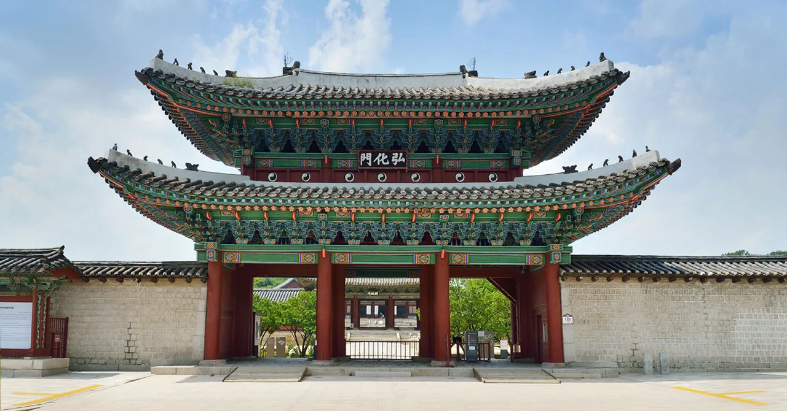
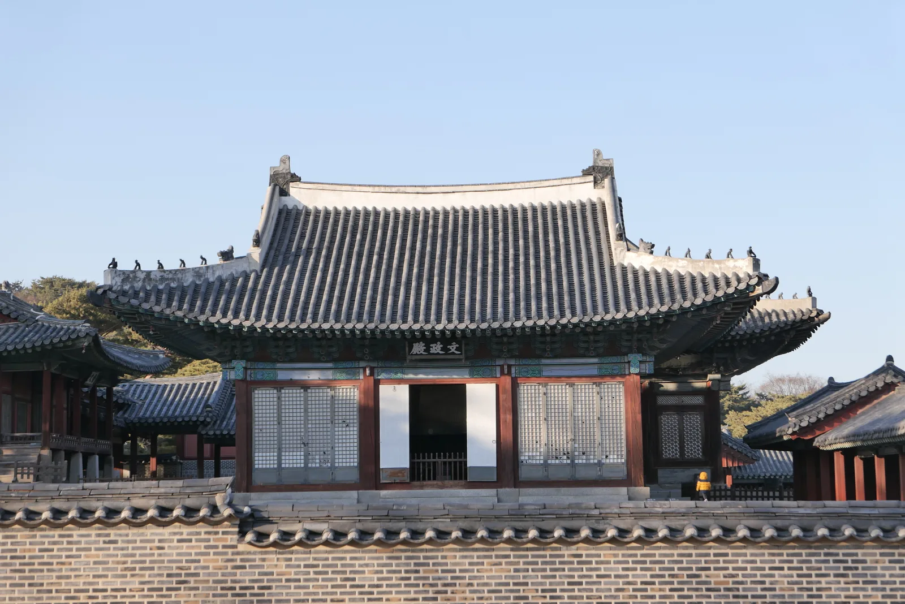
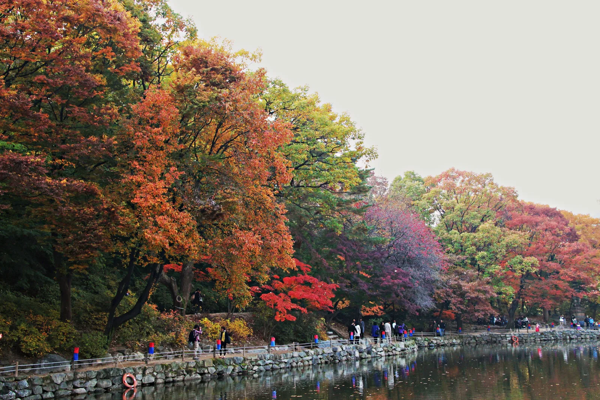
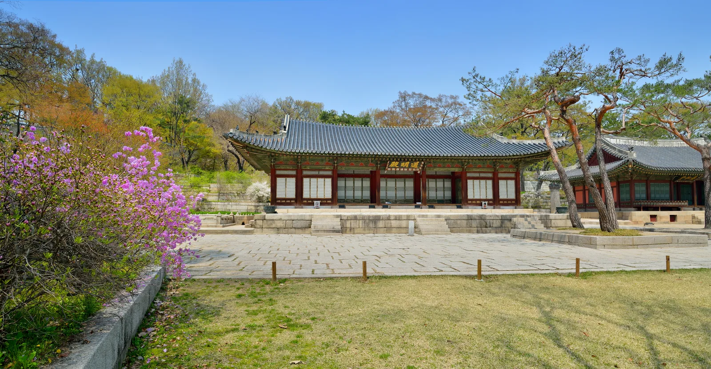
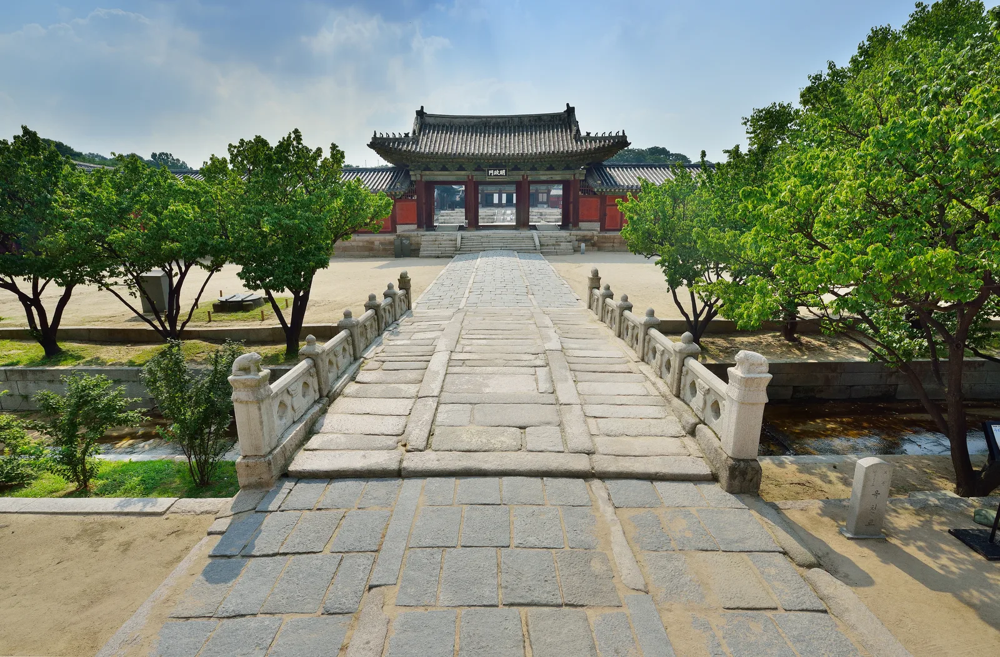
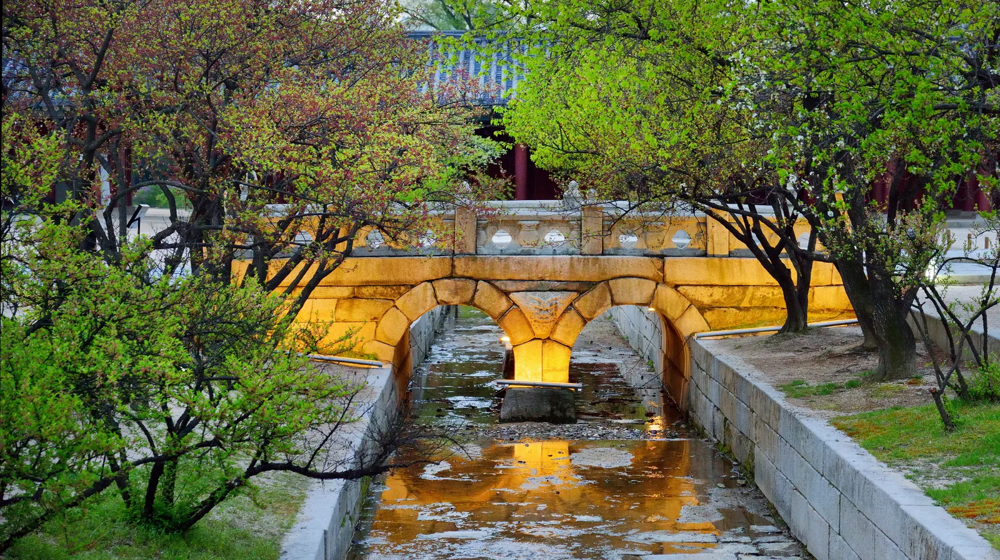

▲ 야간 조명을 받은 창경궁 명정전. 2026년 하반기 '창경궁 야연'은 9월 24일부터 10월 4일까지 문정전 일원에서 열린다 ⓒ Wikimedia Commons (CC BY-SA 4.0)
창경궁 야연은 부모님 한 분을 왕실 연회의 주빈으로 초대하는 체험형 프로그램이다. 19세기 순조 때 효명세자가 아버지에 대한 효심으로 마련했던 궁중 연향 '야연(夜宴)'에서 이름과 콘셉트를 따왔고, 2021년부터 정례적으로 운영되고 있다. 2026년 하반기 회차는 9월 24일부터 10월 4일까지 창경궁 문정전 일원에서 열리며, 예매는 오늘(9월 8일) 오후 2시부터 티켓링크에서 선착순으로 진행된다.

▲ 낮에 본 창경궁 명정전. 국보로 지정된 정전으로, 야연 행사장인 문정전과 나란히 서 있다 ⓒ Wikimedia Commons (CC BY-SA 2.0)
1. 무엇을 체험하나 — 문무백관이 되어보는 하룻밤

▲ 창경궁 정문 홍화문. 야연 체험객은 이 문을 지나 문정전 일원으로 향한다 ⓒ Wikimedia Commons
야연의 핵심은 부모 세대를 '주빈'으로 대접하는 구성이다. 체험자로 선정된 부모님 한 분은 조선시대 문관·무관 혹은 외명부의 전통 복식과 분장을 갖추고, 전문 배우들이 재현하는 궁중 연회의 주인공이 된다. 장수를 기원하는 사진 촬영과 가족에게 전하는 영상 편지 제작, 궁중 병과(떡과 과자) 시식 등의 체험이 이어지고, 동반한 가족은 궁중 정재(궁중무용)와 민속 예능 공연을 함께 관람한다. 입장권 1매로 체험자 1명과 동반 가족 2명, 총 3명까지 참여할 수 있어 사실상 3인 가족 단위 티켓인 셈이다.

▲ 야연 행사장인 문정전. 세자가 정무를 보던 편전으로, 명정전 바로 옆에 자리해 이번 행사 기간에는 궁중 연회장으로 꾸며진다 ⓒ Wikimedia Commons
2. 오늘 오후 2시, 선착순 예매

▲ 서울 고궁의 야간 개방 풍경. 창경궁은 저녁 9시까지 열려 있어 야연 예매에 실패해도 밤 산책이 가능하다 ⓒ 대한민국 구석구석(한국관광공사)
경복궁 별빛야행이나 덕수궁 밤의 석조전과 달리, 창경궁 야연은 추첨이 아니라 선착순 예매로 운영된다. 2026년 하반기 회차 예매는 이 글이 발행되는 오늘, 9월 8일 오후 2시 티켓링크에서 열린다. 회차별 체험자 정원이 30명으로 제한적이라 인기 회차(주말·추석 연휴 전후)는 예매 시작과 동시에 마감될 가능성이 크다. 실제로 2026년 상반기(5월) 야연은 전 회차가 매진됐던 만큼, 원하는 날짜가 있다면 오후 2시 정각에 맞춰 접속하는 편이 안전하다. 체험 예매에 실패했더라도 실망할 필요는 없다. 창경궁을 방문한 관람객 중 선착순 70명은 공연 자체를 무료로 관람할 수 있어, 체험은 놓치더라도 궁중 정재와 민속 예능 공연은 현장에서 볼 기회가 남아 있다.
티켓링크에서 창경궁 야연 예매 가능3. 야연 놓쳤다면 — 1,000원짜리 대안, 물빛연화

▲ 창경궁 후원의 춘당지. 하반기 미디어아트 프로그램 '물빛연화'는 이 연못 일원에서 펼쳐진다 ⓒ Wikimedia Commons
야연 예매에 실패했거나 5만 원이 부담스럽다면, 같은 창경궁에서 열리는 야간 프로그램 '물빛연화'가 대안이 될 수 있다. 2026년 하반기 물빛연화는 10월 7일부터 11월 1일까지 수~일요일에 운영되며, 예매는 9월 11일 오전 11시부터 티켓링크에서 선착순으로 시작된다. 가격은 창경궁 입장료를 포함해 1인 1,000원으로 야연의 50분의 1 수준이고, 1인 최대 4매까지 구매할 수 있다. 하루 3회(19:00·19:30·20:00 시작, 각 16분 상영)로 나눠 진행되며 회차당 400명, 하루 총 1,200명이 참여할 수 있어 야연보다 좌석 여유가 훨씬 넉넉하다. 다만 100% 사전예매제로 운영돼 현장 판매는 없으므로, 관람을 원한다면 9월 11일 예매 시작 시각을 놓치지 말아야 한다.
4. 야연 없어도 — 매일 밤 9시까지 열리는 창경궁
▲ 야간 조명이 들어온 명정전. 야연 기간이 아니어도 창경궁은 연중 오후 9시까지 야간 관람이 가능하다 ⓒ Wikimedia Commons (CC BY-SA 4.0)
야연은 정해진 기간에만 열리는 특별 프로그램이지만, 창경궁 자체는 연중 오전 9시부터 오후 9시까지(입장 마감 오후 8시) 별도 예약 없이 현장 발권으로 관람할 수 있다. 관람료는 1,000원이며 만 18세 이하·65세 이상·한복 착용자는 무료다. 야간 개방 구역은 홍화문·명정전·통명전·춘당지·대온실 일대로, 국보로 지정된 명정전과 왕비의 침전이었던 통명전에 조명이 들어온 모습을 볼 수 있다. 매주 월요일은 휴궁일이다. 우천 시에도 야간 개방은 정상 운영되지만 물빛연화 등 옥외 미디어아트 프로그램은 기상 상황에 따라 축소되거나 취소될 수 있어, 방문 전 창경궁 공지사항을 확인하는 편이 좋다. 야간 조명 사진을 찍을 때는 삼각대 없이도 명정전 앞 박석 마당처럼 시야가 트인 곳에서 스마트폰 야간모드를 쓰면 흔들림 없는 사진을 얻기 쉽다.

▲ 왕비의 침전이었던 통명전. 야간 개방 시간대에는 이 건물에도 조명이 들어와 명정전과는 다른 분위기를 볼 수 있다 ⓒ Wikimedia Commons
5. 걸어서 종묘까지 — 궁궐담장길 연계 동선

▲ 명정문 앞의 옥천교. 창경궁 정문(홍화문)에서 이 다리를 건너면 명정전 권역으로 들어선다 ⓒ Wikimedia Commons
창경궁을 다 둘러본 뒤 시간이 남는다면, 2024년 10월부터 다시 열린 궁궐담장길을 따라 종묘까지 걸어볼 수 있다. 일제강점기 율곡로가 뚫리며 끊어졌던 창경궁과 종묘 사이 약 503m 구간의 궁궐 담장이 복원되면서, 창경궁 율곡로 출입문과 종묘 북신문을 통해 두 공간을 직접 오갈 수 있게 됐다. 다만 매주 토·일요일, 공휴일, 매월 마지막 주 수요일('문화가 있는 날')에만 개방되며, 운영 시간은 9~10월 기준 오전 9시~오후 5시다. 창경궁과 종묘의 입장권은 각각 1,000원씩 별도로 발권해야 한다는 점도 기억해두자. 개방일이 아니어도 창경궁 정문인 홍화문에서 나와 도로를 따라 걸으면 종묘까지 도보 약 10분 거리다.

▲ 야간 조명을 받은 옥천교. 야연 기간이 아니어도 야간 개장 시간대에는 이 다리 일대에도 조명이 들어온다 ⓒ Wikimedia Commons
6. 주차는 포기하고 혜화역으로
창경궁도 덕수궁과 마찬가지로 방문객용 주차장을 운영하지 않는다. 국가유산청 산하 창경궁 관리소도 공식적으로 대중교통 이용을 권장하고 있다. 가장 가까운 역은 지하철 4호선 혜화역으로, 4번 출구에서 나와 성균관대 방향으로 약 300m, 다시 창경궁·종로 방향으로 약 300m를 걸으면 정문인 홍화문에 닿는다. 도보로 약 12분 걸리므로, 입장 마감 시각(오후 8시)을 감안해 여유 있게 출발하는 것이 안전하다. 혜화역을 지나는 버스 노선을 이용하면 '창경궁·서울대학교병원' 정류장에서 홍화문까지 도보 1분이면 충분하다.
7. 정리
체크포인트
- 2026년 하반기 창경궁 야연(9/24~10/4) 예매는 오늘 9월 8일 오후 2시, 티켓링크에서 선착순으로 시작된다.
- 가격은 1매 5만 원, 체험자 1명+동반 가족 2명까지 참여 가능하다.
- 체험 예매를 놓쳐도 선착순 70명 무료 공연 관람 기회가 남아 있다.
- 1,000원짜리 대안 프로그램 '물빛연화'는 10월 7일~11월 1일 운영, 예매는 9월 11일 오전 11시 시작이다.
- 야연이 없는 날에도 창경궁은 매일 밤 9시까지 개방되며 명정전·통명전 야간 조명을 볼 수 있다.
- 주말·공휴일에는 궁궐담장길을 통해 종묘까지 도보로 연계 관람이 가능하다(입장권은 각각 발권).
- 창경궁에는 주차장이 없다. 4호선 혜화역 4번 출구에서 도보 12분이 기본 동선이다.
예매는 티켓링크(ticketlink.co.kr)에서, 프로그램 문의는 궁능 활용 프로그램(☎ 1522-2295)이다.